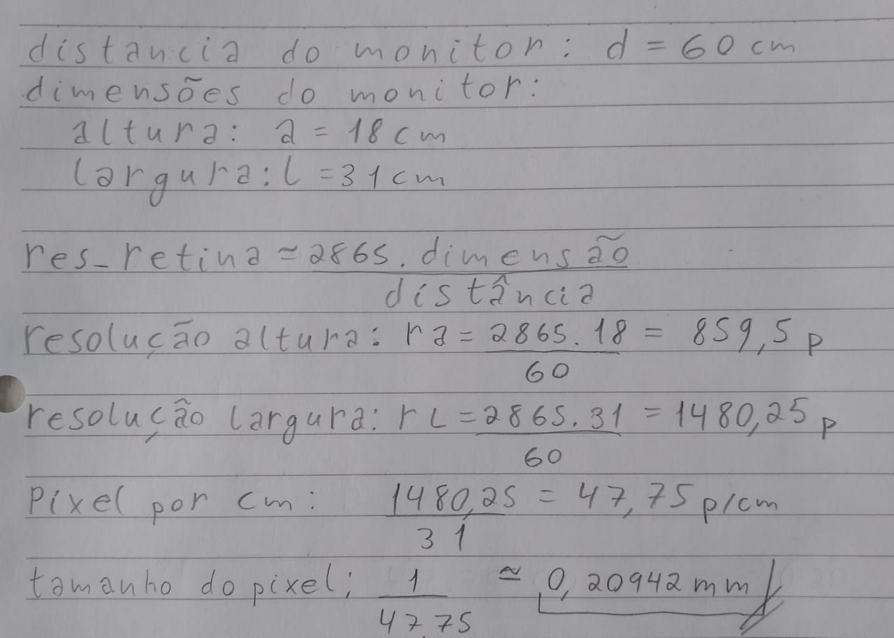

1.Um projetor multimídia de resolução 1920x1080 pixels, instalado a 3.5 metros da tela de projeção resulta numa largura total de 3 metros de imagem projetada na tela. Assinale qual é a altura em metros da imagem projetada na tela, e qual a razão de tiro deste projetor, respectivamente.
Altura da tela: 3*16/9 = 1.6875m Razão de tiro: (D/W) = 3.5/3 = 1.167
2.Considerando que visão humana tem uma resolução espacial de 50 CPD:
a) Qual a distância que um projetor multimídia deve ser posicionado numa sala de aula para que a plateia da primeira fila obtenha resolução retina das imagens projetadas? Dados do projetor: razão de tiro 1.2 e resolução 1280x768 pixels.Dados da sala: distancia da primeira fila para a tela: 2.5m
Aproximadamente 1.34m.
b) No seu uso diário de um monitor de computador qual tamanho de pixel seria suficiente para você obter resolução retina? Justifique sua resposta através dos cálculos necessários e apresente as considerações de distâncias típicas do seu ambiente de estudo ou trabalho no computador.
Aproximadamente 0,2mm. Meu monitor deveria ter uma resolução de 1480x860 pixels, mais do que a resolução original de 1366x768.

3.Explique como é feita uma quantização dos coeficientes DCT-2D em imagem e ilustre graficamente por que a características dos coeficientes da transformada DCT-2D permite a compactação de energia do sinal, concentrando as informações nos coeficientes de baixa frequência.
A quantização na DCT-2D é feita através da eliminação dos coeficientes de altas frequências (geralmente, a diagonal secundária e abaixo) dos resultados das convoluções.
Na figura abaixo, podemos ver diferentes quantidades de coeficientes da DCT-2D sendo mantidos e as imagens resultantes.
Fonte.
4.Seja um sinal de vídeo que transporta imagens a cores com resolução 1920x1080 pixels,amostradas com taxa de 50 quadros por segundo e 8-bits.Este vídeo é comprimido por um codificador com sub-amostragem 4:2:2, resultando numa taxa média de compressão de 1:791.Indique qual é a taxa média de transmissão deste video em Mbit/s, antes e depois da compressão, respectivamente:
Antes: 1920*1080*8*50/1000 = 829440 Mbit/s
Depois: 829440/791 = 1048.6 Mbit/s
5.Descreva as duas técnicas abaixo:
a.Predição espacial intra-quadro, que analisa blocos de pixels da vizinhança dentro da mesma imagem;
Os 3 tipos de predição intra-quadro são:
- Predição de amostra prévia: utiliza pixels vizinhos nas linhas da imagem para realizar a predição.
- Predição de Matriz: Utiliza pixels vizinhos tanto das linhas quanto das colunas, para realizar a predição.
- Predição de Plano: Utiliza pixels das duas direções (como na predição de matriz) e ainda subtrai os valores de pixel diagonais anteriores.
b.Predição de compensação de movimento, que analisa blocos de pixels em posições próximas em imagem adjacentes.
Nesta técnica, é criada uma imagem nova através da translação linear de um bloco sobre a imagem de referência.
O preditor é obtido computando a diferença entre as imagens preditas e originais. O preditor opera tanto na compressão quanto na descompressão.
6.Pesquise diferenças na escolha dos valores limiares num quantizador escalar.
Infelizmente não encontrei nada relevante sobre esse tema.
7.Pesquise como é a implementação de um algoritmo LBG de projeto de codebooknum VQ.
Encontrei duas implementações em Python:
Neste repositório, o algoritmo é implementado do zero, sem chamadas de uma implementação existente do K-Means.
Já neste outro repositório, é possível também visualizar interativamente o funcionamento do algoritmo. Nesse repositório é possível encontrar o link para uma implementação em java.
8.Cite semelhanças e diferenças entre os algoritmos LBG e K-Means de VQ.
Ambos são algoritmos de clusterização, que podem ser utilizados para quantização de vetores.
O algoritmo K-Means é bastante simples, sendo muito utilizado em machine learning também.
O algoritmo LBG é uma extensão do K-Means, utilizando sua saída para otimização da quantização vetorial, geralmente com valores de K de potências de 2.
O LGB é mais computacionalmente custoso, e portanto demora mais para convergir. Além disso, não é garantida sua convergência. É também altamente dependente do conjunto de treinamento.
Fonte